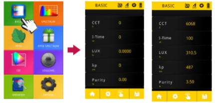
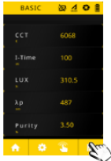

Sạc đầy pin trước khi sử dụng.
Cắm thẻ MicroUSB trước khi sử dụng (nếu cần lưu kết quả).
Thực hiện dak calibrate, chú ý phải che sensor lại bằng miếng cao su đen đi kèm máy.
Cài đặt ngày và giờ.
Nhấn vào phần “Basic” trên màn hình mở chế độ đo ánh sáng bức xạ mặt trời -> Nhấn vào hình bàn tay góc dưới cùng của màn hình để bắt đầu đo -> Máy sẽ kêu “beep” sau khi hoàn thành quá trình đo, kết quả hiện trên màn hình của thiết bị -> Sau khi đo, nhấn nút lưu ở góc trái phía dưới màn hình để lưu kết quả đo, kết quả sẽ được lưu trong thẻ MicroUSB.


Nhấn vào phần “Spectrum” trên màn hình chính mở chế độ đo chất luợng ánh sáng (bước sóng ánh sáng) rồi tiến hành tương tự như trên
Nhấn vào phần ”PPFD” trên màn hình chính mở chế độ đo mật độ quang phổ photon hoặc lựa chọn xem tỷ lệ phối trộn các màu sắc ánh sáng khác nhau. Vd: R:B, R:FR ...